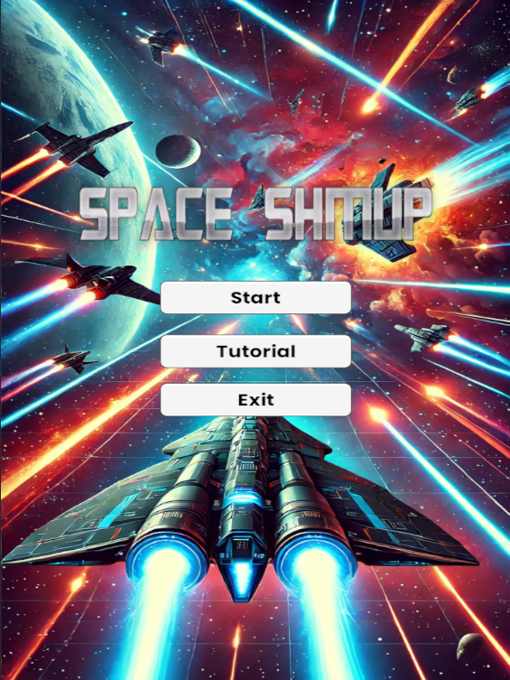

üöÄ Project 2: Space SHMUP üåå

üìú Project Summary
In this exciting game, you play as a spaceship defending the galaxy against enemy waves.
üöÄ Start
To start playing, follow these steps:
- Clone the Directory:
git clone git@github.com:Amandine2002/SpaceSHMUP.git
- Open the Project: Start Unity and open the cloned folder.
- Play the Game: Click "Play" in Unity to start your space adventure.
üõ†Ô∏è Features
- 5 Enemy Waves: Face waves of five enemy ships at once.
- Damage System: Players can take damage from enemies, adding a survival element.
- Shooting Mechanics: Your ship can shoot lasers to take down enemies.
- Power-Up System: Enemies drop power-ups that enhance firepower or shield.
- Scrolling Starfield Background: A dynamic, scrolling starfield simulates movement.
üìö Technologies used
- Unity: Game engine for scene development and management.
- C#: Programming language for game scripts.
üìà Future Improvements
- Add more diverse enemy types with unique attack patterns.
- Introduce boss battles at the end of each level.
- Expand the starfield to include asteroid fields and other environments.
- Add sound effects and music for an enhanced experience.
Previous Project: Space SHMUP